Выбираешь рацион
60+ готовых меню на 2–3 дня — для похудения, поддержания или набора, калорийность подстраивается под тебя.


Кристина · закрытый канал «Что поесть»
Оплата в Telegram-боте — ссылка на закрытый канал придёт сразу после оплаты.
24 сообщения участниц — как есть, без правок


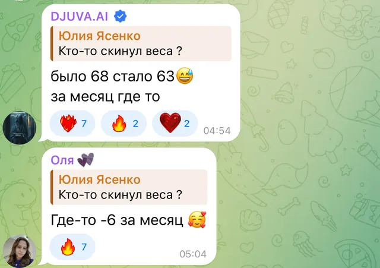


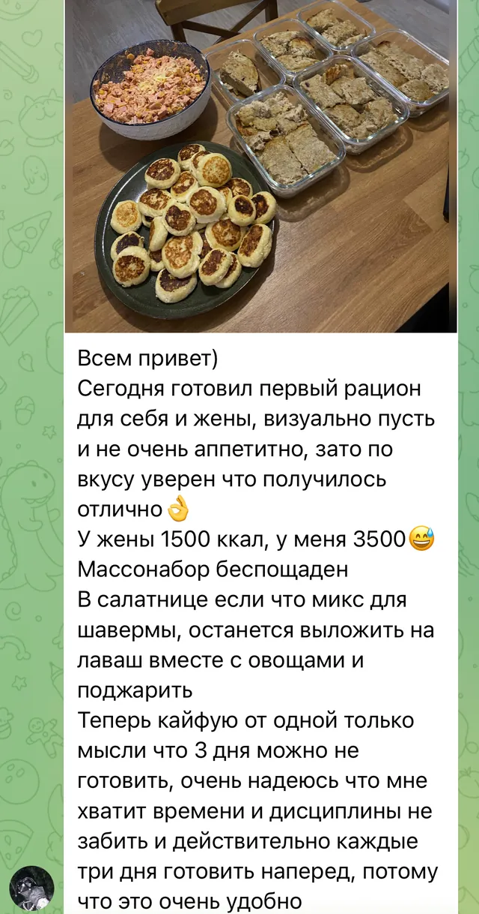

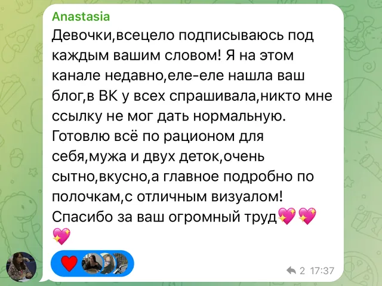

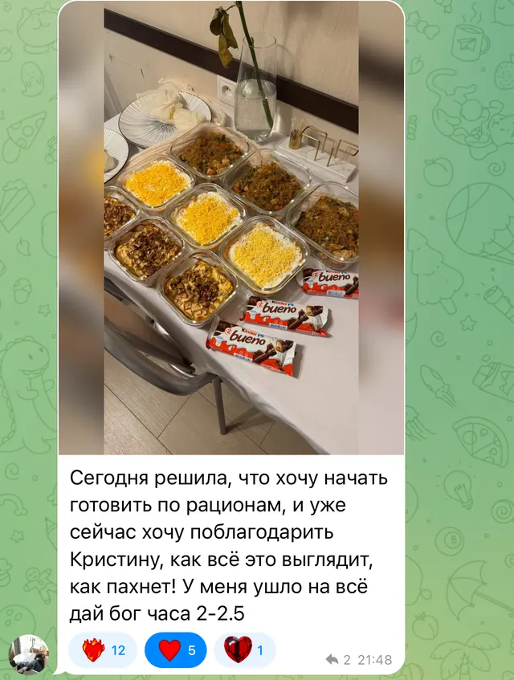

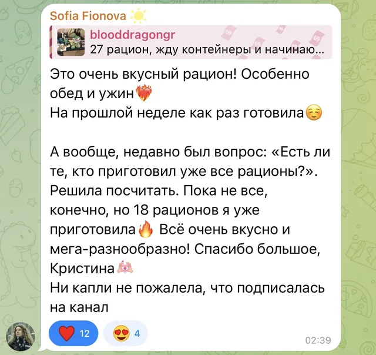


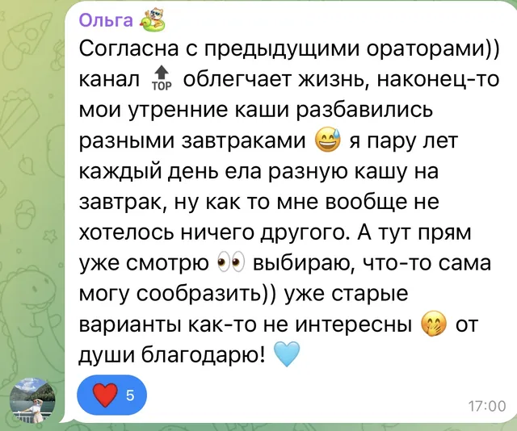
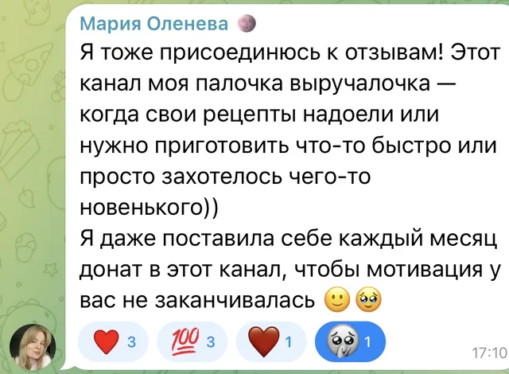
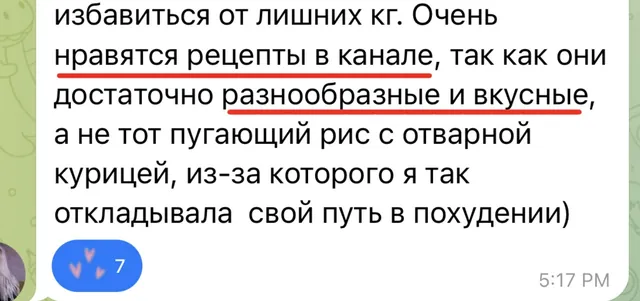


Хочешь так же?
Готовые рационы от нутрициолога Кристины Василиу — готовь один раз сразу на 3 дня, без заморочек, подсчёта калорий и сложных ингредиентов.


Каждый день одно и то же: придумать меню, подбить под КБЖУ, купить продукты… А хочется просто открыть холодильник и знать, что сегодня на ужин.
Со всем этим я уже разобралась за тебя.


60+ готовых меню на 2–3 дня — для похудения, поддержания или набора, калорийность подстраивается под тебя.
Продукты уже собраны в список — со ссылками на Пятёрочку, Перекрёсток, Ленту и Магнит.
1,5–2 часа по пошаговому видео — справится даже новичок.
Достаёшь готовый контейнер — и не думаешь о еде до следующей готовки.
Четыре причины, почему с готовыми рационами проще достигать своих целей — без строгих диет и подсчёта калорий.
Никаких скучных диетических блюд и крошечных порций: привычная еда, посчитанная так, что ты сыта, а вес уходит.
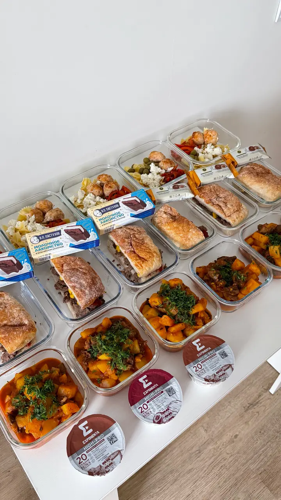
Без запретов и чувства вины: сладкое уже вписано в калории.
Завтрак, обед, ужин и десерт уже ждут в холодильнике.

Её с удовольствием едят и мужчины, и маленькие привереды — порции у каждого свои.

Выбери свою цифру — и посмотри реальный рацион из канала.
рационы на 1400–1800 ккал · фото без фильтров

В рационах есть паста, пицца, хачапури, лазанья, супы, брауни, креветки, роллы с манго и шоколадки — это не диета и не марафон.
Рационы, рецепты и списки покупок — всё уже продумано за тебя.

меню на 2–3 дня за 1,5–2 часа готовки

пошагово — справится даже новичок
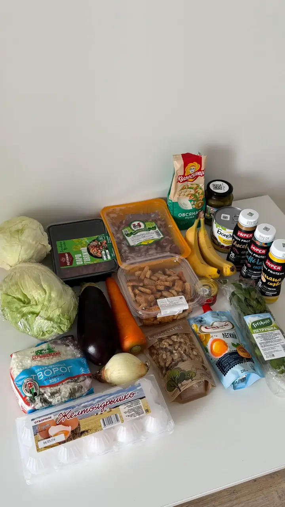
с граммовками и ссылками на магазины
уже посчитаны за тебя на каждое блюдо

похудение, поддержание или набор
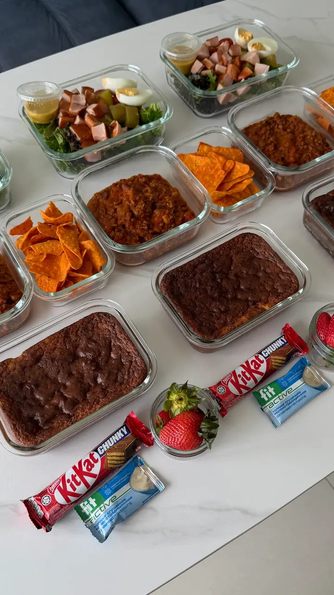
коллекция регулярно пополняется
Не нужно составлять меню, считать калории и искать рецепты — я уже всё сделала.
Нутрициолог. Сама сбросила 13 кг без жёстких диет, а муж Макс — 15, хотя раньше вообще не готовил.
Моё главное правило: чтобы питаться сбалансированно, не нужно усложнять себе жизнь.
Реальные сообщения из чата канала — без правок.
Вся база рационов — в обоих тарифах. Ссылку на канал бот пришлёт сразу после оплаты.
1 790 ₽
один платёж — и без продлений
1 190 ₽
≈ 400 ₽ в месяц — дешевле одной доставки
Нет. Паста, пицца, выпечка, супы и десерты — всё вписано в КБЖУ. Худеешь за счёт порций, а не запретов.
Да. Каждый рецепт — с пошаговым видео. Мой муж Макс раньше не готовил вообще, а теперь готовит сам.
1,5–2 часа на рацион, которого хватает на 2–3 дня.
Рационы рассчитаны на 1400–1800 ккал. Выбери ближайший к своей норме или пересчитай порции готовым промптом из канала — под похудение, поддержание или набор.
К каждому рациону есть список с граммовками и ссылками на Пятёрочку, Перекрёсток, Ленту, Магнит и другие сети. Добавляешь в корзину — и готово.
Да. Готовишь одно на всех, порции у каждого свои. Мужья и дети едят с удовольствием.
На тарифе «навсегда» — нет, это разовый платёж. «3 месяца» продлевается автоматически, отменить можно в боте в любой момент.
Один вечер у плиты — и три дня ужин уже ждёт в холодильнике. Я собрала эту систему для себя. Теперь она твоя.
— Кристина